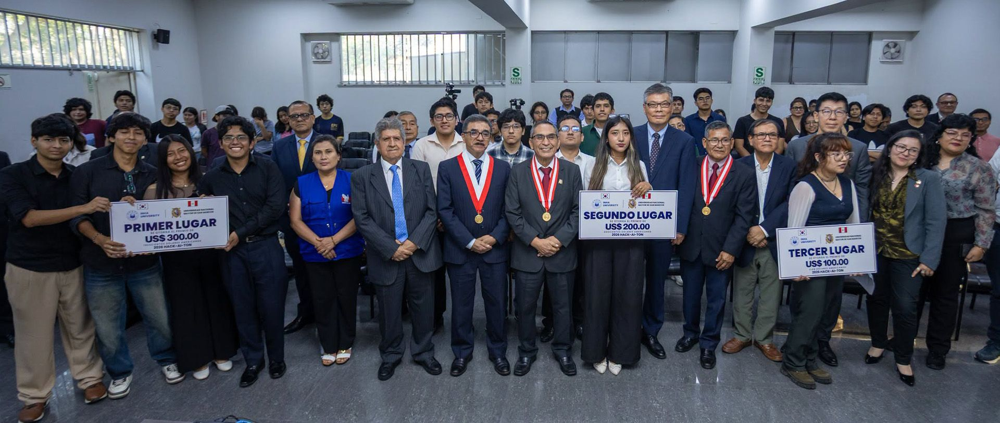
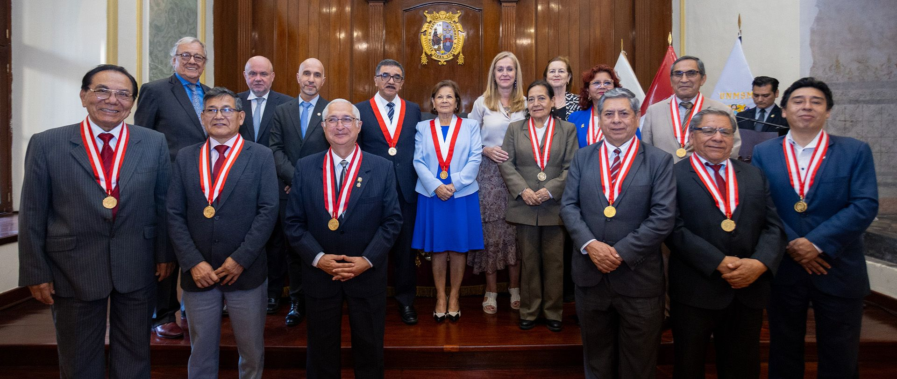

INVESTIGACIÓN
Ciencia para responder a nuevos desafíos.
Explora la producción científica y las iniciativas de investigación de nuestra comunidad.
Explorar investigaciónDESDE 1551, CONSTRUYENDO FUTURO
Historia, ciencia y compromiso con el Perú.
Descubre la Universidad Nacional Mayor de San Marcos.
NUESTRA ESENCIA
La Universidad Nacional Mayor de San Marcos es un espacio de formación, investigación y cultura al servicio de la sociedad. Su legado se proyecta hacia los desafíos de nuestro tiempo.
Conoce San MarcosFORMACIÓN QUE ABRE CAMINOS
Conocimiento y vocación al servicio de la vida.
↗02Tecnología e innovación para transformar el país.
↗03Explorar, comprender y descubrir nuevos caminos.
↗04Ideas y decisiones para un desarrollo sostenible.
↗05Pensamiento crítico, cultura y ciudadanía.
↗IDEAS QUE NOS MUEVEN
Una comunidad que investiga,
comparte y crea oportunidades.

INVESTIGACIÓN
Explora la producción científica y las iniciativas de investigación de nuestra comunidad.
Explorar investigación
COOPERACIÓN ACADÉMICA
Conoce los espacios de movilidad y cooperación que conectan a San Marcos con el mundo.
Explorar oportunidadesSIEMPRE SANMARQUINOS